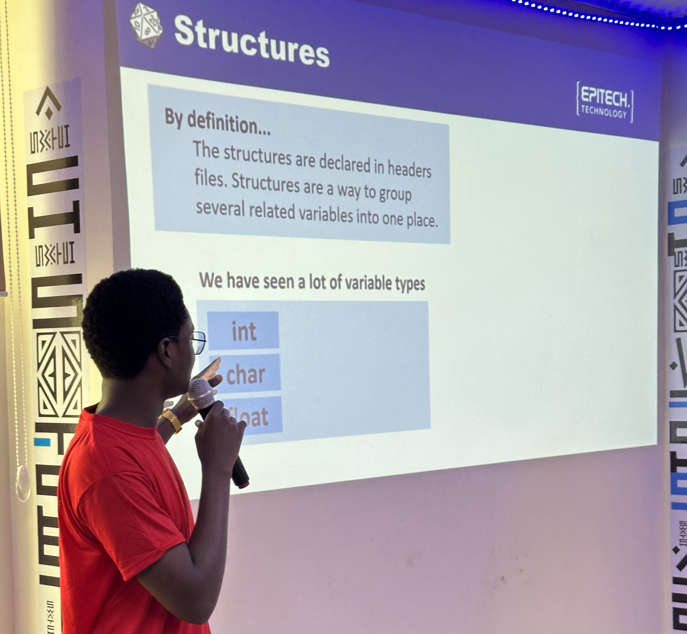

À Epitech, il n'y a pas de professeur et la pédagogique est 100% par projets. Toutefois, afin de ne pas laisser les étudiants seuls face à leurs projets, il existe ce que l'on appelle les AER (Assistant Epitech Régional). Ce sont des étudiants en deuxième ou troisième année possédant les compétences nécessaires pour accompagner les étudiants de première et/ou deuxième année.
Notre mission principale est d'accompager les étudiants dans la réalisation de leurs projets. Ainsi, nous mettons en place des activités pédagogiques destinées aux étudiants, comprenant l'organisation de séances et de workshops portant sur les concepts qui peuvent poser des difficultés. De plus, nous assurons un suivi attentif et un accompagnement personnalisé pour les aider à mener à bien leurs projets.

Cette fonction d'AER que j'occupe depuis Juillet 2022 me permet d'acquérir de précieuses connaissances. En travaillant avec les étudiants de première et deuxième année, j'ai l'opportunité d'approfondir mes compétences techniques en les aidant à résoudre leurs problèmes. Parallèlement, j'améliore mes compétences relationnelles en établissant des liens avec les étudiants, en comprenant leurs besoins et en les soutenant tout au long de leur parcours académique. Cette fonction d'AER est une véritable occasion de développement personnel et professionnel, me permettant de contribuer activement à l'enrichissement de la communauté étudiante d'Epitech.